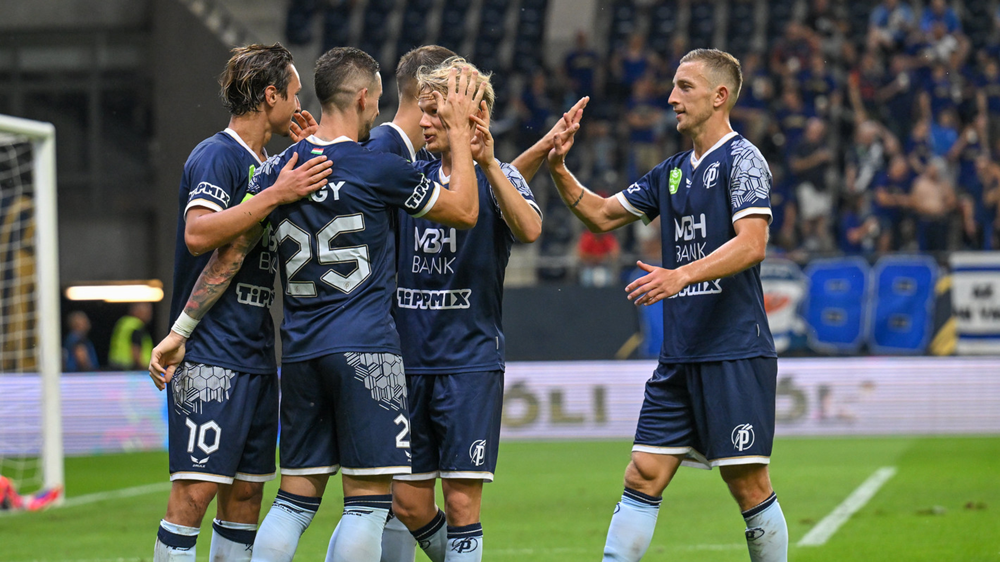

Utolsó pillanatokban szerzett góllal tartotta otthon a pontokat a Puskás Akadémia a DVSC ellen
A megerősített védelemmel felálló Debrecen kezdte jobban a találkozót, de csak oldalhálóig jutott. A Puskás Akadémia a félidő közepétől átvette a játék irányítását, sorra dolgozta ki a helyzeteket a vendégkapu előtt és egy alkalommal a gólvonalról kellett tisztázniuk a védőknek.
Lesgóllal kezdte a második játékrészt a hazai gárda, amely beszorította ellenfelét a saját tizenhatosára. Amikor kiszabadult a szorításból a DVSC, akkor kisebb tűzijátékot rendezett a hazai kapunál. Néhány percig tartott csak a debreceni lendület, mert a cserepadról az összes támadóját bevető Puskás Akadémia ismét nagy erőkkel támadott..
Meglepő módon először a Debrecen állt közelebb a gólszerzéshez, amikor Bárány Donát fejese a kapufán csattant. Végül a győztes találatot a felcsútiak szerezték meg, Wojciech Golla fejesből volt eredményes.
A felcsúti együttes sorrendben nyolcadik hazai bajnokiját nyerte meg, míg Máté Csaba irányításával a DVSC harmadszor is vereséget szenvedett.